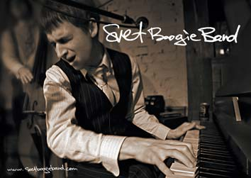

|
Смотреть также: фото | пресса
о группе |
контакты
Svet Boogie Band
 Группу
Svet Boogie Band создал в 2003 музыкант, композитор
и неординарный исполнитель блюза из Минска - Свет.
Svet Boogie Band признается блюзовым коллективом
№1 в Беларуси. Группа играет в лучших белорусских музыкальных
клубах, а также является одним из лидеров клубной блюзовой
сцены Москвы. Кроме этого, Svet Boogie Band выступает
во многих городах России и Польши, а также принимает участие
в крупных фестивалях в Беларуси, Польше, России, Франции.
В репертуаре Svet Boogie Band - чикагский блюз,
классические фортепианные буги, романтичные и чувственные
блюзовые баллады, что создает группе прочную репутацию в
блюзовом сообществе. Собственные композиции, пронизанные
тонким ароматом джаза, делают группу частым гостем на джазовых
фестивалях, таких как "IV Euroregionalne Spotkania
Gospel & Jazz" в Польше или фестиваль "Усадьба.
Джаз" в подмосковном Архангельском.
Свой последний альбом, "Nothing But Love",
группа представила в Минске в сентябре 2005 года. Он целиком
состоит из авторского материала. Песни, включенные в диск,
написаны во время интенсивного клубного тура весной-летом
2005 года и отражают новое звучание группы. Диск получил
восторженные отзывы белорусской и российской музыкальной
прессы и был тепло принят блюзовым сообществом, что, естественно,
вдохновило музыкантов на новые свершения.
В основе разносторонности и стилевого разнообразия Svet
Boogie Band лежит музыкальный опыт его участников. Ритм-секцию
представляют два брата - Алексей и Тихон Золотовы.
Они оба были хорошо знакомы белорусским любителям джаза
еще до прихода в Svet Boogie Band. Демонстрируя прекрасное
понимание блюзовой традиции, они создают солидную музыкальную
основу звучанию группы. Алексей Шилович (гитара)
является, пожалуй, одним из наиболее профессиональных белорусских
блюзовых гитаристов. Ни на миг не останавливаясь в своем
развитии, он показывает зрелый стиль игры, насквозь пронизанный
пресловутым "блюзовым чувством". Алексей - практически
единственный белорусский музыкант, играющий на слайд-гитаре.
Один польский журналист, восхищенный бьющей через край
энергией и необычной манерой держаться на сцене, однажды
назвал фронтмена группы, Света, "гуттаперчевым
мальчиком". Он может превосходно играть на фортепиано
в стиле Пайнетопа Перкинса (Pinetop Perkins) и на губной
гармошке в стиле Снуки Прайора (Snookey Prior), а его вокал
то наполняется неизбывной тоской, то становится игривым
и задиристым. Кроме того, Свету неизменно удается создать
на концерте уникальную атмосферу любви и всепоглощающей
радости.
Присутствие на выступлениях Svet Boogie Band - это
всегда неповторимое переживание и источник вдохновения. Те,
кто близок к блюзовой культуре, уходят с концерта удовлетворенными,
а "новички" не перестают удивляться, как такая "печальная"
музыка может звучать так весело. Будь это одна из любимых
мелодий Мадди Уотерcа (Muddy Waters) или собственное произведение
Света, рассказывающее о девушке, с которой он познакомился
на нескончаемых гастролях группы - каждая песня исполняется
от самого сердца и только для вас!
|